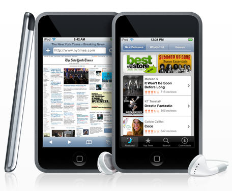

The iPod Touch is a portable media player, personal digital assistant, and Wi-Fi mobile platform designed and marketed by Apple Inc. The product was launched on September 5, 2007. The iPod Touch adds the multi-touch graphical user interface to the iPod line. It is the first iPod with wireless access to the iTunes Store, and also has access to Apple's App Store, enabling content to be purchased and downloaded directly on the device. Apple Inc. has sold 20 million iPod Touch units as of September 2009.
